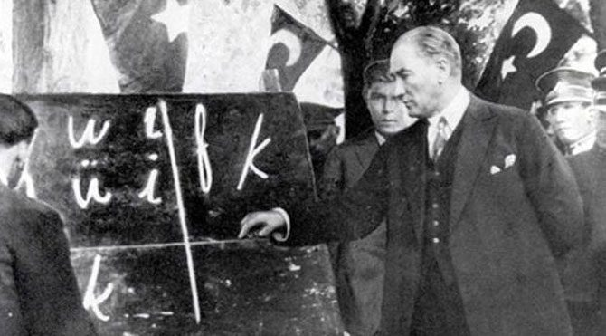

facebook
facebook twitter
twitter instagram
instagramGazi Mustafa Kemal Atatürk
Türkiye Cumhuriyeti'nin kurucusu, ebedi önder. Türk aydınlanmasının mimarı, başkomutan, başöğretmen, ulu önder Atatürk'ün yaptığı bazı önemli devrimleri hatırlayalım. Tümünü görmek için:

Önemli Devrimler

Harf Devrimi
Tekke ve Zaviyelerin Kapatılması
Tevhid-i Tedrisat Kanunu
Kadınlara Seçme-Seçilme Hakkı Verilmesi
I want you for Zafer Order!
Make secular republic great again!!!